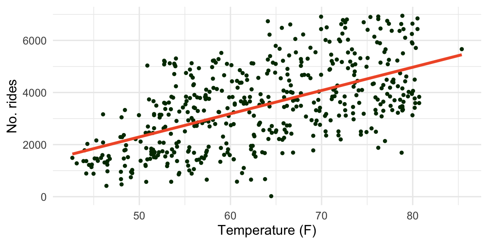
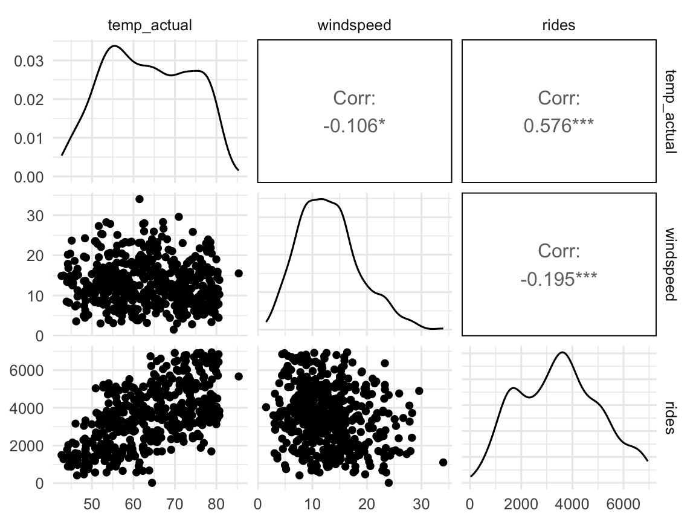
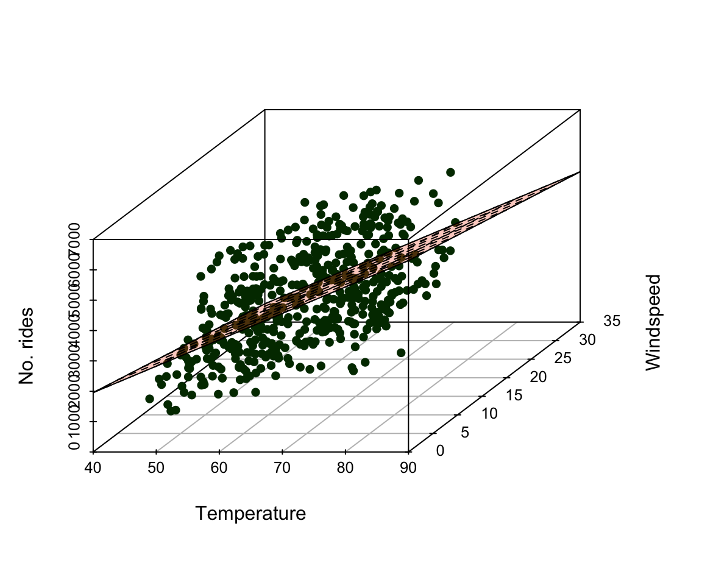
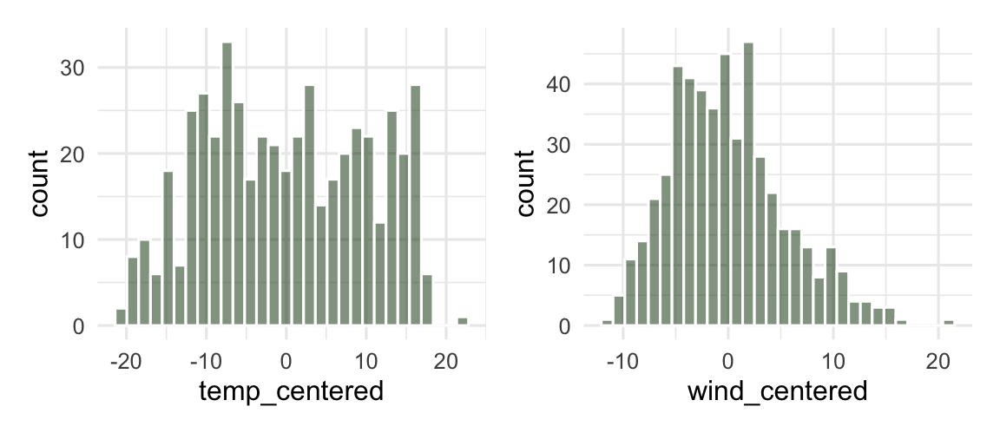

Day 09: Intro to Multiple Linear Regression
Back to bikes: one predictor
\[\widehat{\text{rides}} = -2168.77 + 89.23(\text{temp\_actual})\]
\(R^2 =\) 0.332 – temperature alone leaves a lot of variation in ridership unexplained. What if we add a second predictor?
Pairs plot and correlation matrix

bikes |>
select(temp_actual, windspeed, rides) |>
cor() |> round(3) temp_actual windspeed rides
temp_actual 1.000 -0.106 0.576
windspeed -0.106 1.000 -0.195
rides 0.576 -0.195 1.000Multiple Linear Regression (MLR)
\[Y_i = \beta_0 + \beta_1 x_{i1} + \beta_2 x_{i2} + \cdots + \beta_p x_{ip} + \varepsilon_i, \quad \varepsilon_i \overset{\mathrm{iid}}{\sim} N(0, \sigma^2)\]
This model requires:
- \(\mu\{Y \mid x_1, x_2, \ldots, x_p\}\) is a ___________________ function of the predictors
- The error terms are ___________________
- The error terms follow a Normal distribution with mean 0 and variance \(\sigma^2\)
Fitting the model
Procedure: least squares estimation chooses the coefficients to minimize
\[\text{SSE} = \sum_{i=1}^n \left(Y_i - \widehat{Y}_i\right)^2, \qquad \text{then} \quad \widehat\sigma = \sqrt{\frac{\text{SSE}}{n - (p+1)}}\]
bikes_mlr <- lm(rides ~ temp_actual + windspeed, data = bikes)
coef(bikes_mlr)(Intercept) temp_actual windspeed
-1525.53822 87.01789 -38.62817 Interpreting \(\widehat\beta_0\)
(Intercept) temp_actual windspeed
-1525.538 87.018 -38.628 \(\widehat\beta_0\) is the expected value of the response when ___________________. Here: the expected number of rides is about -1525.5 when temperature = 0 and windspeed = 0 – not a meaningful day in this dataset!
Interpreting \(\widehat\beta_j\)
\(\widehat\beta_j\) is the expected change in the response for a 1-unit increase in \(x_j\), when ___________________________________.
- We expect 87.02 additional rides for every 1 degree increase in actual temperature, holding windspeed constant.
- We expect 38.63 fewer rides for every 1 MPH increase in windspeed, holding temperature constant.
Geometric interpretation: the MLR “line” is a plane
With two predictors, the fitted model is no longer a line but a plane through 3-dimensional space:

Centering predictor variables
Idea: recenter each predictor at its own mean, so an intercept of “all predictors = 0” becomes an intercept of “all predictors at their ___________________” – a value that actually occurs in the data.
bikes <- bikes |>
mutate(
temp_centered = temp_actual - mean(temp_actual, na.rm = TRUE),
wind_centered = windspeed - mean(windspeed, na.rm = TRUE)
)Centering shifts the mean to 0 but leaves the spread alone:
| mean_orig | mean_centered | sd_orig | sd_centered |
|---|---|---|---|
| 63.33 | 0 | 10.17 | 10.17 |
Interpreting the centered model
(Intercept) temp_centered wind_centered
3482.214 87.018 -38.628 - \(\widehat\beta_0\): the expected number of rides is about 3482 on an average temperature and windspeed day – much more interpretable than before.
- \(\widehat\beta_j\)’s don’t change – they still describe the expected change for a 1-unit increase in the original units of \(x_j\), holding the other predictor constant.
Standardizing predictor variables
Idea: 1 MPH of windspeed isn’t comparable to 1°F of temperature, so comparing raw slopes across predictors can be misleading. Standardize each predictor to have mean 0 and SD 1:

bikes <- bikes |>
mutate(
temp_std = (temp_actual - mean(temp_actual, na.rm = TRUE)) / sd(temp_actual, na.rm = TRUE),
wind_std = (windspeed - mean(windspeed, na.rm = TRUE)) / sd(windspeed, na.rm = TRUE)
)| mean_orig | mean_std | sd_orig | sd_std |
|---|---|---|---|
| 63.33 | 0 | 10.17 | 1 |
Interpreting the standardized model
(Intercept) temp_std wind_std
3482.214 885.032 -213.560 - \(\widehat\beta_0\): expected rides on an average day is unchanged from the centered model (3482).
- \(\widehat\beta_j\): now the expected change in the response for a 1 ___________________ increase in \(x_j\), holding the other predictor constant.
- We expect 885 additional rides for every 1 SD increase in temperature (10.2 degrees), holding windspeed constant.
- We expect 214 fewer rides for every 1 SD increase in windspeed (5.5 MPH), holding temperature constant.
Note
Standardized coefficients put predictors measured in different units on a common scale, so their magnitudes become directly comparable.